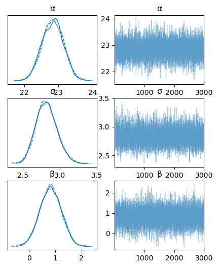
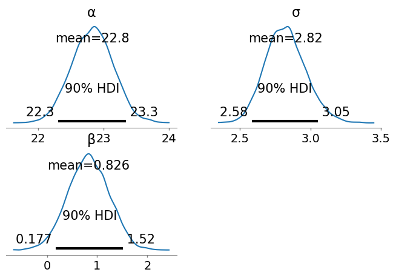
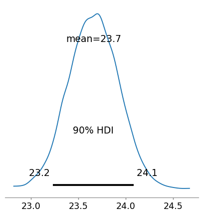
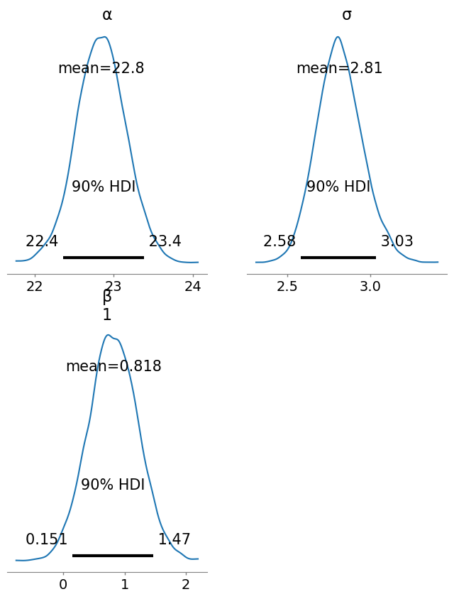

# loading & wrangling data
using CSV, DataFrames
# plotting; algebraofgraphics is built on the Makie plotting package
using CairoMakie, AlgebraOfGraphics
CairoMakie.activate!(type = "svg") # high quality plots; note use of !
# frequentist stats
using HypothesisTests
# bayesian stats
using Turing, TuringGLM, ArviZ Introduction
This is the third of three posts that will carry out data loading, exploration, filtering and statistical testing using different ‘data science’ programming languages. In the first post of the series we used R; in the second post we used python. In this post we’ll use julia. I’ll add some extra commentary in this post about using julia because it’s new and not so familiar (to me anyway). If you want to follow along then the data are here.
‘Time to first plot’ problem
Julia has been designed to be fast as well as having a bunch of other advantages from modern computer science. The speed comes from the use of software called LLVM for just-in-time compilation. The developers hope it helps solve the ‘two-language problem’ where machine learning applications/data science are written in a slow high-level language like R or python and then translated to a fast lower-level language like C++ or Rust for actual use. You can read more about this here.
However one consequence of just-in-time compilation is increased latency the first time any function is called because new machine code has to be compiled. In the julia community this is described as the ‘time to first plot problem’ because it can take a while to generate a plot the first time you call a plotting function (as we’ll see later). The time-to-first plot problem makes julia like the F1 car in this video (start at ~5.30 if you don’t want the whole thing). It starts later but once it gets going it flies along. The julia version used to write this post was version 1.8.5. Latency improvments are expected in julia 1.9.
If all this is gobbledygook then the TLDR is that the first time you do anything in julia in a fresh session it can take a while (especially plotting). Once it’s going though it goes very fast.
Preliminaries
Like R and python, julia has a host of extra packages to help with data import, wrangling, plotting & building various kinds of models. Julia is a young language in the data science/ numerical computing space. The version 1.0 release was only in 2018. This means that the infrastructure for analysis, data wrangling, plotting etc is not quite as stable as either R or python (although the version 1.0 release helped a lot with this). Julia packages may come and go and may or may not be maintained over the coming years. Everything I’ve used here (written in 2022) has a good level of support though and these packages should still be in existence in years to come although the exact syntax for usage might change. You can read about how to install julia packages here.
In any case the first step is to load the packages we will need. This will also take a while because some code is compiled at load time!
Loading the data
The read() function from the CSV package reads in the csv formatted data. The last argument to the function (DataFrame) provides a ‘sink’ for the loaded data i.e. turns the loaded data into a DataFrame object.
# get data; note defintion of missing values in function call
df = CSV.read("data/BODY_COMPOSITION_DATA.csv", header = 1, missingstring = "NA", DataFrame)
first(df, 5) # first 5 rows5×10 DataFrame
| Row | sex | girths | bia | DW | jackson | HW | skinfolds | BMI | WHR | Waist |
|---|---|---|---|---|---|---|---|---|---|---|
| String1 | Float64 | Float64? | Float64 | Float64 | Float64? | Float64 | Float64 | Float64 | Float64 | |
| 1 | M | 10.85 | 5.7 | 9.22 | 4.75 | 17.0 | 50.75 | 20.7 | 0.8 | 76.5 |
| 2 | M | 14.12 | 6.2 | 11.8 | 5.5 | 16.9 | 46.3 | 21.9 | 0.81 | 75.0 |
| 3 | M | 12.3 | 6.3 | 12.0 | 5.5 | 14.8 | 45.8 | 21.39 | 0.73 | 70.0 |
| 4 | M | 8.5 | 6.4 | 10.85 | 5.0 | 10.2 | 43.55 | 19.26 | 0.74 | 68.5 |
| 5 | M | 11.66 | 6.6 | 15.6 | 12.0 | 11.86 | 93.5 | 22.3 | 0.78 | 74.0 |
Exploration & tidying
The DataFrames package provides tools for exploring the data.
#summarise data
describe(df)10×7 DataFrame
| Row | variable | mean | min | median | max | nmissing | eltype |
|---|---|---|---|---|---|---|---|
| Symbol | Union… | Any | Union… | Any | Int64 | Type | |
| 1 | sex | F | M | 0 | String1 | ||
| 2 | girths | 20.705 | 7.15 | 20.12 | 87.9 | 0 | Float64 |
| 3 | bia | 16.9797 | 5.7 | 16.2 | 39.3 | 1 | Union{Missing, Float64} |
| 4 | DW | 21.6638 | 4.1 | 21.4 | 45.9 | 0 | Float64 |
| 5 | jackson | 14.2333 | 3.0 | 12.8 | 35.0 | 0 | Float64 |
| 6 | HW | 21.4243 | 4.1 | 21.0 | 43.0 | 1 | Union{Missing, Float64} |
| 7 | skinfolds | 82.881 | 27.75 | 76.23 | 181.0 | 0 | Float64 |
| 8 | BMI | 23.2509 | 2.9 | 23.0 | 33.03 | 0 | Float64 |
| 9 | WHR | 0.782105 | 0.67 | 0.78 | 0.99 | 0 | Float64 |
| 10 | Waist | 76.8379 | 61.0 | 76.0 | 100.8 | 0 | Float64 |
We can see from the nmissing column that there are missing data in the HW and bia columns. The last column of this output (eltype) tells us the type of data we have & where we see Union{Missing, Float64} the column of data contains both Float64 and Missing data.
We can drop the rows containing missing values with the dropmissing() function. The dropmissing!() variant (i.e. with !) means we change the data ‘in place’; the actual data we loaded is changed. The use of ! like this is a common motif in julia to make in-place changes to objects (data, plots, variables etc).
# ! means in-place change
DataFrames.dropmissing!(df)
describe(df)10×7 DataFrame
| Row | variable | mean | min | median | max | nmissing | eltype |
|---|---|---|---|---|---|---|---|
| Symbol | Union… | Any | Union… | Any | Int64 | DataType | |
| 1 | sex | F | M | 0 | String1 | ||
| 2 | girths | 20.7346 | 7.15 | 20.12 | 87.9 | 0 | Float64 |
| 3 | bia | 16.9801 | 5.7 | 15.9 | 39.3 | 0 | Float64 |
| 4 | DW | 21.6146 | 4.1 | 21.4 | 45.9 | 0 | Float64 |
| 5 | jackson | 14.2122 | 3.0 | 12.6 | 35.0 | 0 | Float64 |
| 6 | HW | 21.4264 | 4.1 | 21.0 | 43.0 | 0 | Float64 |
| 7 | skinfolds | 82.6848 | 27.75 | 76.23 | 181.0 | 0 | Float64 |
| 8 | BMI | 23.223 | 2.9 | 23.0 | 33.03 | 0 | Float64 |
| 9 | WHR | 0.781529 | 0.67 | 0.78 | 0.99 | 0 | Float64 |
| 10 | Waist | 76.7567 | 61.0 | 76.0 | 100.8 | 0 | Float64 |
The missing value rows have been removed from the data. Next we will convert our data from wide format to long format (Wickham 2014) using the stack() function. In long format the values for each individual and each measurement technique are identified by rows rather than spread across row & column combinations. The long data format will make later plotting and statistical analyses easier.
# reshape data to long
dfl = DataFrames.stack(df, 2:10)
# DataFrames.stack() here because TuringGLM also has a stack function; we need to be explicit about the version of stack() we want to use
first(dfl, 5)5×3 DataFrame
| Row | sex | variable | value |
|---|---|---|---|
| String1 | String | Float64 | |
| 1 | M | girths | 10.85 |
| 2 | M | girths | 14.12 |
| 3 | M | girths | 12.3 |
| 4 | M | girths | 8.5 |
| 5 | M | girths | 11.66 |
describe(dfl)3×7 DataFrame
| Row | variable | mean | min | median | max | nmissing | eltype |
|---|---|---|---|---|---|---|---|
| Symbol | Union… | Any | Union… | Any | Int64 | DataType | |
| 1 | sex | F | M | 0 | String1 | ||
| 2 | variable | BMI | skinfolds | 0 | String | ||
| 3 | value | 30.9349 | 0.67 | 21.6 | 181.0 | 0 | Float64 |
As well as data summaries, exploration with plots is an essential step for checking values and the distribution of data. There are quite a few plotting packages for julia with various general or more specific uses. In this post we’ll use the Makie (Danisch and Krumbiegel 2021) package which seems to have good mindshare in the julia community, is being actively developed and can cover many different graphical presentation styles. To use Makie for faceted plots we can call on the AlgebraOfGraphics package which is built on Makie. If you’ve used ggplot2 in R then AlgebraOfGraphics aims to provide very similar functionality. I tried several other packages (Gadfly, StatsPlots, VegaLite) here as well but I couldn’t get any of them to produce a plot I liked. It seems as though production of facet/trellis plots with jittered data points is an area for development in julia!
Unfortunately AlgebraOfGraphics doesn’t support jittering points (or a beeswarm plot) yet (I think jittering is useful in a plot like this so all the data can be seen) so in the code below we create boxplots rather than jittered points.
# faceted boxplot of all variables coloured by Sex
bxpl = data(dfl) * visual(BoxPlot) * mapping(:sex, :value, color =:sex, layout = :variable) # faceting is defined by layout argument
# http://juliaplots.org/AlgebraOfGraphics.jl/dev/gallery/gallery/layout/faceting/
cols = ["F" => :firebrick, "M" => :cornflowerblue]
# draw() to show plot
draw(bxpl, facet = (;linkyaxes = :none), palettes = (color = cols,), figure=(;resolution=(800,800))) # note trailing comma needed in palettes argument (defines a tuple)
Note
On my systems (i7 macbook pro (2015) & i7 linux machine; both 16Gb RAM) this plot takes about 55s… time to first plot problem!
There are a couple of mad values in the BMI and girths variables. For the rest of the analysis we’ll concentrate on the BMI variable. First we’ll filter the data to just BMI and then plot that data.
# filter using anonymous function x -> x == "BMI"; x where x = BMI
# https://juliadatascience.io/filter_subset
bmi = subset(dfl, :variable => ByRow(x -> x == "BMI"))
# plot just BMI
bmipl = data(bmi) * visual(BoxPlot) * mapping(:sex, :value, color = :sex)
draw(bmipl, palettes = (color = cols,), figure = (; resolution = (400,400)))The unrealistically low value in the male BMI is obvious.
We’ll filter the BMI variable to sensible values for sample (i.e. students) by only including values here BMI is > 18.
bmi = filter(:value => x -> x > 18, bmi)
# redo plot to check
bmipl = data(bmi) * visual(BoxPlot) * mapping(:sex, :value, color = :sex)
draw(bmipl, palettes = (color = cols,), figure = (; resolution = (400,400)))The data look much better.
Frequentist testing
We’re now in a position to undertake some statistical analysis. We’ll start with a simple t-test to examine the mean difference in BMI between males and females. The HypothesisTesting.jl package provides functions for frequentist testing including t-tests. We first extract the data we want to test into separate series and then pass these series to the appropriate function. Here we are using the unequal variance t-test (i.e. Welch’s test).
# create data vectors
mdata = filter(:sex => x -> x == "M", bmi).value
fdata = filter(:sex => x -> x == "F", bmi).value
# carry out test
res = UnequalVarianceTTest(mdata, fdata)
resTwo sample t-test (unequal variance)
------------------------------------
Population details:
parameter of interest: Mean difference
value under h_0: 0
point estimate: 0.824192
95% confidence interval: (0.055, 1.593)
Test summary:
outcome with 95% confidence: reject h_0
two-sided p-value: 0.0359
Details:
number of observations: [118,82]
t-statistic: 2.113420475300814
degrees of freedom: 192.04757366286913
empirical standard error: 0.38998033970175344There is quite a lot of detail here although this is not so different from the R t.test() output. The point estimate & p-value are of most interest. We can get just the p-value using the pvalue() extractor function passing in the test and tail areas (i.e. one- or two-sided) we want. We can print a rounded p-value using string interpolation with $(thing_we_want_to_print). There doesn’t seem to be a function to extract the point estimate though… that would be handy since p-values don’t contain point estimate information.
pv = pvalue(UnequalVarianceTTest(mdata, fdata); tail = :both)
# print p rounded to 3 dp
println("The p-value for the difference in male versus female BMI is $(round(pv, digits = 3)).")The p-value for the difference in male versus female BMI is 0.036.There’s also a confint() function for confidence intervals.
ci = confint(UnequalVarianceTTest(mdata, fdata); tail = :both, level = 0.95)
println("The 95% CI for the difference in male versus female BMI is from $(round(ci[1], digits = 3)) to $(round(ci[2], digits = 3)).")The 95% CI for the difference in male versus female BMI is from 0.055 to 1.593.The 95% CI here ranges from barely different (0.055 units larger) to quite different (1.59 units larger).
Bayesian testing
LIke R and python julia has a package for the Stan probabilistic programming language called Stan.jl. So one way to write Bayesian models in julia is to use Stan.jl. However we’ll use a native julia library called Turing.jl (Ge, Xu, and Ghahramani 2018). Turing.jl allows us to write data generating models and then use Markov Chain Monte Carlo (MCMC) sampling with those model definitions to generate posterior distributions. Turing.jl supports a range of MCMC algorithms. In the code below we use the same priors we defined in the posts using R & python.
First we create a dummy variable for sex such that males are coded as 1 and females are coded as 0 and we also extract the BMI values into a separate variable.
# create dummy vars for sex & get value data
indep_var = Int64.(bmi.sex .== "M"); # vector of 1 & 0's for M & F respectively; the . after Int64 means 'broadcast' i.e. apply to every value in the vector of M/F
# values
dep_var = bmi.value;Next we set up the priors and define the likelihood for the data.
# bayesian model Turing
# same priors as R/python
@model function bayes_bmi(x, y)
# priors
α ~ Normal(25, 10) # julia allows unicode characters; \alpha + TAB
β ~ Normal(0, 5) # \beta + TAB
# +ve only Normal dist for residual var
σ ~ truncated(Normal(0, 100), lower = 0) # \sigma + TAB
# likelihood for each y
for i in 1:length(y)
y[i] ~ Normal((α + β * x[i]), σ)
end
endbayes_bmi (generic function with 2 methods)We sample from the model we just set up using the NUTS algorithm (the same algorithm used by Stan by default) to create the posterior distribution.
# sample; 1000 is burn in; 0.65 is acceptance rate for samples; 3000 samples; 3 chains; MCMCThreads() required to get > 1 chain
# note about threads on Turing.jl guide page: "Be aware that Turing cannot add threads for you – you must have started your Julia instance with multiple threads to experience any kind of parallelism."
bayes_bmi_result = sample(bayes_bmi(indep_var, dep_var), NUTS(1000, 0.65), MCMCThreads(), 3000, 3);┌ Warning: Only a single thread available: MCMC chains are not sampled in parallel
└ @ AbstractMCMC ~/.julia/packages/AbstractMCMC/F9Hbk/src/sample.jl:296
┌ Info: Found initial step size
└ ϵ = 0.003125
┌ Info: Found initial step size
└ ϵ = 0.0125
┌ Info: Found initial step size
└ ϵ = 0.0125
Sampling (1 threads): 67%|███████████████████▍ | ETA: 0:00:00Sampling (1 threads): 100%|█████████████████████████████| Time: 0:00:00In the python post we used the arviz library (Kumar et al. 2019) to visualise and summarise the distributions. The same library is available for julia as ArviZ.jl and it works in much the same way. In order to examine summaries of the posterior distributions we first convert the MCMCChains object from the posterior sampling to an InferenceData object.
# convert to InferenceData object using ArviZ
idata_bayes_bmi_result = from_mcmcchains(bayes_bmi_result)InferenceData
posterior
Dataset with dimensions: Dim{:draw}, Dim{:chain}
and 3 layers:
:α Float64 dims: Dim{:draw}, Dim{:chain} (3000×3)
:σ Float64 dims: Dim{:draw}, Dim{:chain} (3000×3)
:β Float64 dims: Dim{:draw}, Dim{:chain} (3000×3)
with metadata Dict{String, Any} with 3 entries:
"created_at" => "2023-04-09T17:26:46.465"
"inference_library_version" => "6.0.0"
"inference_library" => "MCMCChains"sample_stats
Dataset with dimensions: Dim{:draw}, Dim{:chain}
and 12 layers:
:energy Float64 dims: Dim{:draw}, Dim{:chain} (3000×3)
:n_steps Int64 dims: Dim{:draw}, Dim{:chain} (3000×3)
:diverging Bool dims: Dim{:draw}, Dim{:chain} (3000×3)
:max_energy_error Float64 dims: Dim{:draw}, Dim{:chain} (3000×3)
:energy_error Float64 dims: Dim{:draw}, Dim{:chain} (3000×3)
:is_accept Bool dims: Dim{:draw}, Dim{:chain} (3000×3)
:log_density Float64 dims: Dim{:draw}, Dim{:chain} (3000×3)
:tree_depth Int64 dims: Dim{:draw}, Dim{:chain} (3000×3)
:step_size Float64 dims: Dim{:draw}, Dim{:chain} (3000×3)
:acceptance_rate Float64 dims: Dim{:draw}, Dim{:chain} (3000×3)
:lp Float64 dims: Dim{:draw}, Dim{:chain} (3000×3)
:step_size_nom Float64 dims: Dim{:draw}, Dim{:chain} (3000×3)
with metadata Dict{String, Any} with 3 entries:
"created_at" => "2023-04-09T17:26:45.376"
"inference_library_version" => "6.0.0"
"inference_library" => "MCMCChains"First we examine the posterior distributions with traceplots of the MCMC sampling process to make sure the MCMC chains converged.
plot_trace(idata_bayes_bmi_result, figsize = (5,6)); # bit annoying that diff plot engines use diff units for fig sizes e.g. px vs inches
These all look good.
We can then examine summary data. ArviZ.jl uses summarystats() rather than summary() which is used by arviz in python.
# show summary stats
summarystats(idata_bayes_bmi_result, kind = "stats", hdi_prob = 0.9)
# can also get variables explicitly with var_names =
# summarystats(idata_bayes_bmi_result, var_names = ["α", "β", "σ"], kind = "stats", hdi_prob = 0.9)3×5 DataFrame
| Row | variable | mean | sd | hdi_5% | hdi_95% |
|---|---|---|---|---|---|
| String | Float64 | Float64 | Float64 | Float64 | |
| 1 | α | 22.834 | 0.318 | 22.31 | 23.344 |
| 2 | σ | 2.823 | 0.143 | 2.585 | 3.052 |
| 3 | β | 0.826 | 0.41 | 0.177 | 1.518 |
Finally we can use ArviZ to examine more detailed plots of the posterior distributions.
plot_posterior(idata_bayes_bmi_result, grid=(2,2), hdi_prob = 0.9, round_to = 3, figsize = (8,5));
In order to assess the full posterior for male BMI we can extract the MCMC chains for the intercept and coefficient for male and add these together. This returns an Array object rather than an MCMCChains object. We convert the Array to an InferenceData object using convert_to_inference_data().
# posterior for male bmi
male_bmi = idata_bayes_bmi_result.posterior[:α] + idata_bayes_bmi_result.posterior[:β]
# convert to InferenceData
male_bmi = convert_to_inference_data(male_bmi)
# plot
plot_posterior(male_bmi, hdi_prob = 0.9, round_to = 3, figsize=(5,5));
We can generate a summary table as we did above using ArviZ.jl.
summarystats(male_bmi, kind = "stats", hdi_prob = 0.9)1×5 DataFrame
| Row | variable | mean | sd | hdi_5% | hdi_95% |
|---|---|---|---|---|---|
| String | Float64 | Float64 | Float64 | Float64 | |
| 1 | 23.661 | 0.262 | 23.232 | 24.084 |
From this analysis we’d conclude that the female BMI averages 22.85 and with 90% probability ranges from 22.34 to 23.37. Male BMI is greater with an average of 23.66 (notably greater than the upper limit of the female 90% HDI) and ranging from 23.23 to 24.08 with 90% probability. These values are contingent on the priors we used.
Using Turing.jl we have to type the model out explicitly. If you’d prefer a formula type interface then the TuringGLM.jl library can be used to create Bayesian models in a similar manner to brms or rstanarm in R or bambi in python.
Note
TuringGLM is a work in progress and at the moment has some limitations. For hierarchical models only single random-intercept hierarchical models are supported (so no random slope models).
Currently TuringGLM.jl supports the following likelihoods:
- Normal (the default if not specified): linear regression
- TDist: robust linear regression
- Bernoulli: logistic regression
- Poisson: count data regression
- NegativeBinomial: robust count data regression where there is overdispersion
As before we first have to define the priors we want (although TuringGLM does provide default priors as well).
# create custom priors
# turingGLM takes predictors first, then intercept, then auxilliary (e.g. sigma)
# https://beta.turing.ml/TuringGLM.jl/dev/tutorials/custom_priors/ & ?CustomPrior
priors = CustomPrior(Normal(0, 5), Normal(25, 10), truncated(Normal(0, 100), lower = 0))CustomPrior(Normal{Float64}(μ=0.0, σ=5.0), Normal{Float64}(μ=25.0, σ=10.0), Truncated(Normal{Float64}(μ=0.0, σ=100.0); lower=0.0))Now we can define the model using a formula interface and TuringGLM will take care of the heavy lifting for us.
# bayesian model TuringGLM
# add intercept to formula
frm = @formula(value ~ 1 + sex)
# create model (formula, data; priors)
turing_bmi_bayes = turing_model(frm, bmi; priors) # formula, data; priors... note comma & semi-colon use
# sample from model as per Turing above
turing_bmi_bayes_samples = sample(turing_bmi_bayes, NUTS(1000, 0.65), MCMCThreads(), 3000, 3);┌ Warning: Only a single thread available: MCMC chains are not sampled in parallel
└ @ AbstractMCMC ~/.julia/packages/AbstractMCMC/F9Hbk/src/sample.jl:296
┌ Info: Found initial step size
└ ϵ = 0.0125
┌ Info: Found initial step size
└ ϵ = 0.003125
┌ Info: Found initial step size
└ ϵ = 0.0125
Sampling (1 threads): 67%|███████████████████▍ | ETA: 0:00:00Sampling (1 threads): 100%|█████████████████████████████| Time: 0:00:00After converting the MCMCChains object to an InferenceData object we can use ArviZ to summarise & plot the posterior distributions.
# convert to InferenceData object using ArviZ & shpw summary stats
idata_turing_bmi_bayes = from_mcmcchains(turing_bmi_bayes_samples)
# show summary stats; explicit variable selection
summarystats(idata_turing_bmi_bayes, var_names = ["α", "β", "σ"] , kind = "stats", hdi_prob = 0.9)3×5 DataFrame
| Row | variable | mean | sd | hdi_5% | hdi_95% |
|---|---|---|---|---|---|
| String | Float64 | Float64 | Float64 | Float64 | |
| 1 | α | 22.843 | 0.309 | 22.364 | 23.382 |
| 2 | β[1] | 0.818 | 0.402 | 0.151 | 1.465 |
| 3 | σ | 2.814 | 0.138 | 2.582 | 3.034 |
We can plot the posterior distributions.
plot_posterior(idata_turing_bmi_bayes, grid=(2,2), hdi_prob = 0.9, round_to = 3, figsize = (8,10));
We calculate the posteriors for male BMI as before by extracting the intercept and beta coefficient MCMC samples and adding them together.
# calculate male bmi posterior
turing_male_bmi = idata_turing_bmi_bayes.posterior[:α] + idata_turing_bmi_bayes.posterior[:β] # returns a 3x3000x1 Array, not an MCMCChains object
# convert to InferenceData
idata_turing_male_bmi = convert_to_inference_data(turing_male_bmi) # function here is convert_to_inference_dataInferenceData
posterior
Dataset with dimensions: Dim{:draw}, Dim{:chain}, Dim{:β_dim_1}
and 1 layer:
: Float64 dims: Dim{:draw}, Dim{:chain}, Dim{:β_dim_1} (3000×3×1)
with metadata Dict{String, Any} with 1 entry:
"created_at" => "2023-04-09T17:27:12.686"We can summarise and plot the distribtion of male BMI as we did above.
# summarise the posterior
summarystats(idata_turing_male_bmi, kind = "stats", hdi_prob = 0.9)1×5 DataFrame
| Row | variable | mean | sd | hdi_5% | hdi_95% |
|---|---|---|---|---|---|
| String | Float64 | Float64 | Float64 | Float64 | |
| 1 | [1] | 23.66 | 0.26 | 23.246 | 24.1 |
Now we can plot the posterior distribution for male BMI.
# plot the posterior
plot_posterior(idata_turing_male_bmi, hdi_prob = 0.9, round_to = 3, figsize = (5,5));
These results are essetially the same as we got from Turing.jl & the results from both Bayesian analyses are essentially the same as those we got from the frequentist analysis.
Summary
In this post we have used the julia language to load, wrangle, filter and plot some data. We’ve also seen how to do some basic frequentist and Bayesian inference.
References
Danisch, Simon, and Julius Krumbiegel. 2021. “Makie.jl: Flexible High-Performance Data Visualization for Julia.” Journal of Open Source Software 6 (65): 3349. https://doi.org/10.21105/joss.03349.
Ge, Hong, Kai Xu, and Zoubin Ghahramani. 2018. “Turing: A Language for Flexible Probabilistic Inference.” In Proceedings of the Twenty-First International Conference on Artificial Intelligence and Statistics, 1682–90. PMLR.
Kumar, Ravin, Colin Carroll, Ari Hartikainen, and Osvaldo Martin. 2019. “ArviZ a Unified Library for Exploratory Analysis of Bayesian Models in Python.” Journal of Open Source Software 4 (33): 1143. https://doi.org/10.21105/joss.01143.
Wickham, Hadley. 2014. “Tidy Data.” Journal of Statistical Software 59 (1): 1–23. https://doi.org/10.18637/jss.v059.i10.